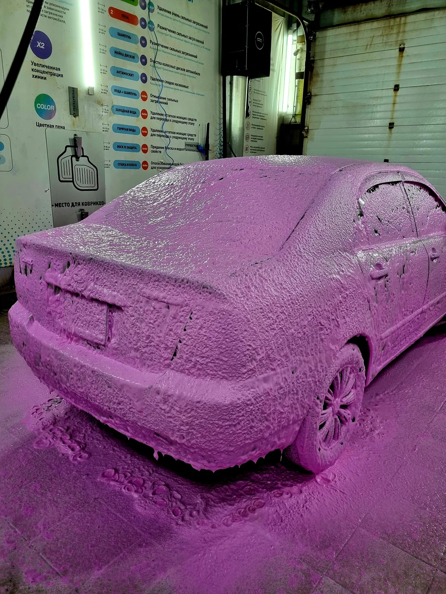
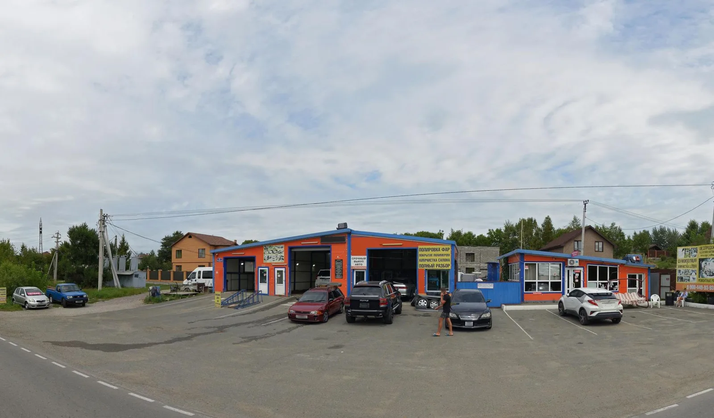
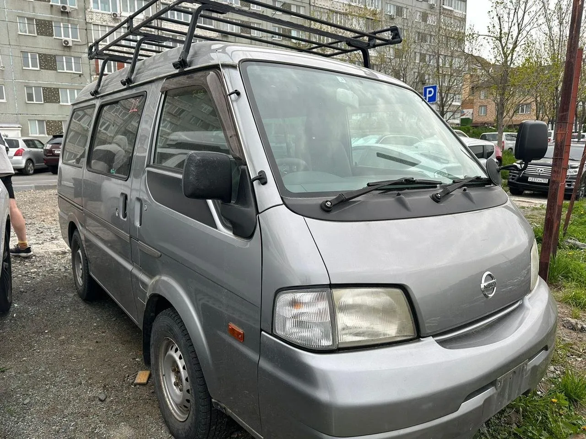
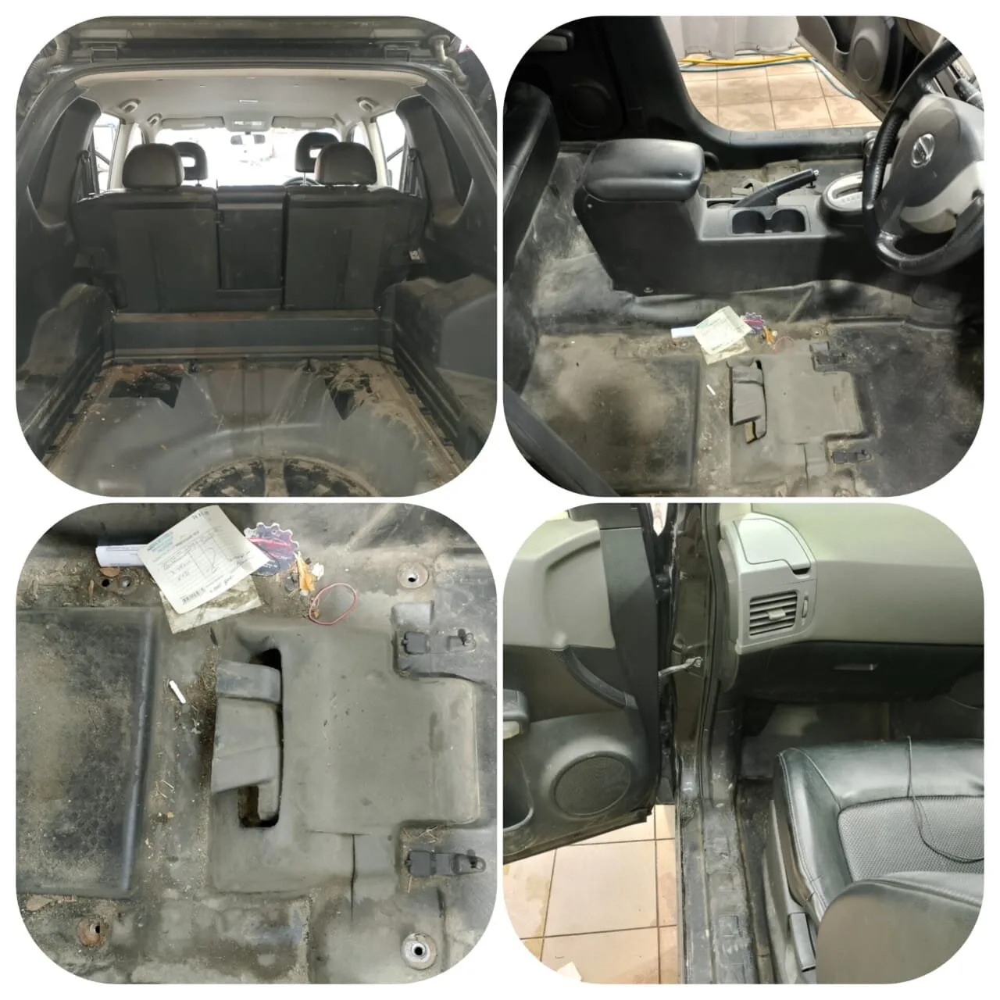
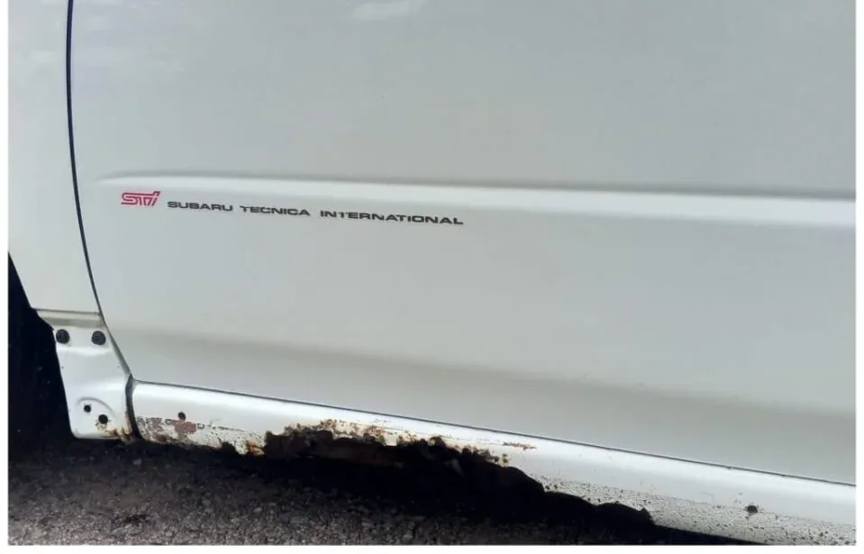
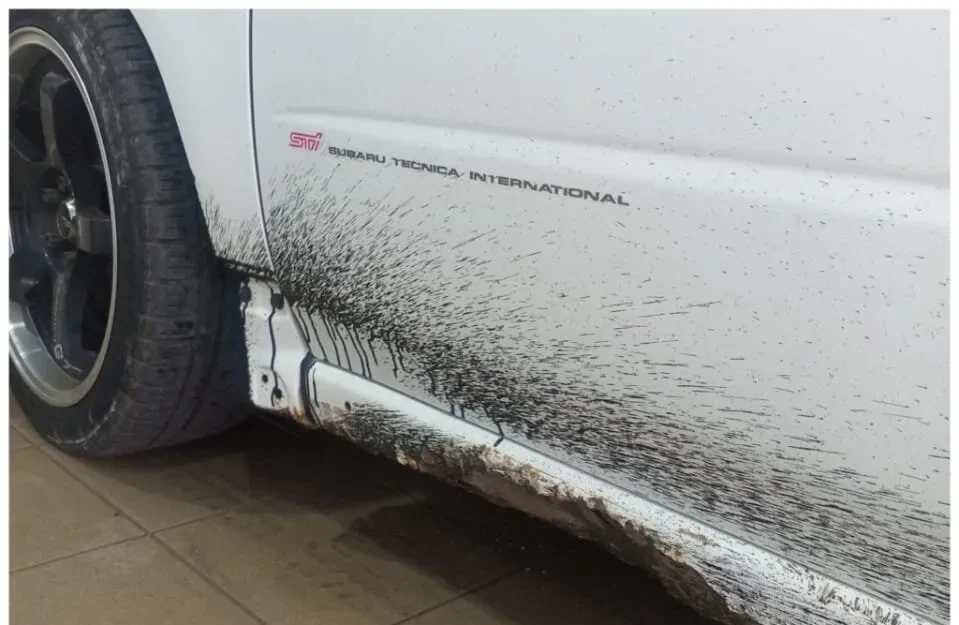

Автомойка на Чичерина, 148
Автомойка Primus в Уссурийске – моют так, что возвращаются годами
Мойка кузова, химчистка салона, полировка и защитные покрытия. Запись по телефону и в WhatsApp – приезжаете к своему времени.
- «Моюсь только у них и уже не один год» – из отзывов
- Можно записаться по телефону и в WhatsApp – из отзывов
- Щепетильные, всегда подскажут – из отзывов

Что входит в мойку
Входит
- Активная пена, бережная для лака
- Ручная доработка стыков и порогов
- Вымываем стёкла и зеркала без разводов
- Полироль на панель – после комплексной
Отдельно, если нужно
- Химчистка салона – снимаем всё, моем до чистой ваты
- Полировка кузова и фар
- Защитные покрытия – воск, полироль, керамика
Цены – ориентиры, точную сумму называем при записи
Цена зависит от класса автомобиля и состояния. Назовём точную сумму сразу – при выдаче она не меняется.
Мойка
- Мойка кузовабесконтактная, сушкаот 500 ₽
- Комплексная мойкакузов, салон, коврики, стёклаот 1 200 ₽
- Мойка двигателябережно, с просушкойот 1 500 ₽
Детейлинг
- Химчистка салонаполный цикл, озонированиеот 9 000 ₽
- Полировка кузовав один или два этапаот 8 000 ₽
- Защитное покрытиевоск или керамикаот 6 000 ₽
Моем и чистим всё – от кузова до багажника. Точную цену называем при записи – на месте она не меняется.
Цены для примера. В вашем сайте будут ваши.
Четыре шага – и машина блестит
- 01
Записались по телефону или в WhatsApp
Назвали марку и что нужно. Подберём удобное время – так пишут клиенты в отзывах.
- 02
Назвали цену до начала
По классу автомобиля и списку работ. При выдаче сумма не меняется.
- 03
Моем по регламенту
Пена, ручная доработка, чистые микрофибры, сушка без разводов.
- 04
Выдача и проверка
Осматриваете машину при нас. Не устроило – доработаем на месте.



До и после – потяните ползунок


Работа с порогами Subaru: сняли битумный налёт, восстановили пластик. Фото с карточки на Яндекс.Картах.
Чего у нас не бывает
Не моем одной тряпкой подряд
Микрофибры меняем на каждую машину – никаких рисок от чужого песка.
Не держим в очереди
Записывайтесь по телефону или в WhatsApp – приедете к своему времени.
Не навязываем «а давайте ещё»
Подскажем, что увидели, – решаете вы. Без «да» ничего не добавляем.
Не прячем цену до выдачи
Сумму называем при записи, до того как машина заехала на пост.
Отзывы с Яндекс.Карт
«Удобное расположение автомойки, можно записаться по телефону и ватсап. Компетентные и щепетильные сотрудники, всегда подскажут и чисто и аккуратно помоют, обработают полиролью панель, вымоют стекла. Моюсь только у них и уже не один год.»
Наталья Мельникова · 17 апреля 2024
«Мою машину только здесь. Моют тщательно, быстро и аккуратно. Комфортная зона ожидания, приветливый администратор.»
Дарья Стремешина · 21 июня 2024
«Хорошая мойка, всегда найдут удобное время. Моют на отлично.»
аннушка татаренко · 29 января 2025
Отзывы с карточки на Яндекс.Картах, без правок.
Частые вопросы
Надо ли записываться заранее?
Лучше да: по телефону или в WhatsApp. Так бокс будет свободен к вашему времени.
Сколько длится мойка?
Обычно полчаса-час. Точное время скажем при записи – от класса машины и загрузки.
Делаете химчистку?
Да, химчистка салона полного цикла – снимаем сиденья и ковры, моем до чистой ваты.
Где ждать, пока моют?
Есть комфортная зона ожидания и приветливый администратор – так пишут клиенты в отзывах.
Запишитесь на мойку к своему времени
- Адрес
- ул. Чичерина, 148, Уссурийск
- Как записаться
- По телефону, в WhatsApp или Telegram